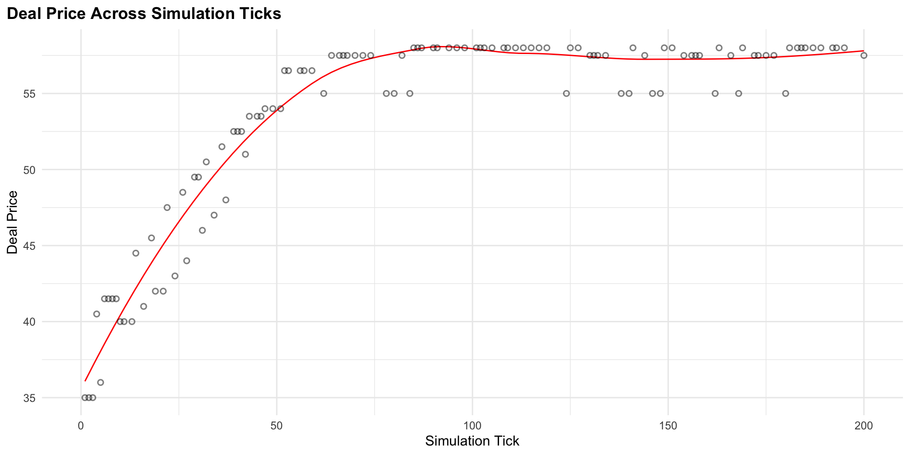
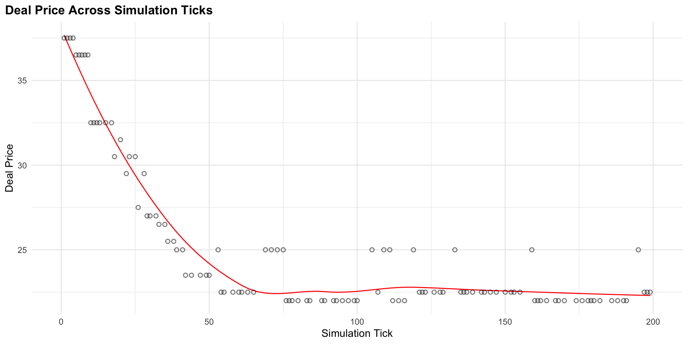
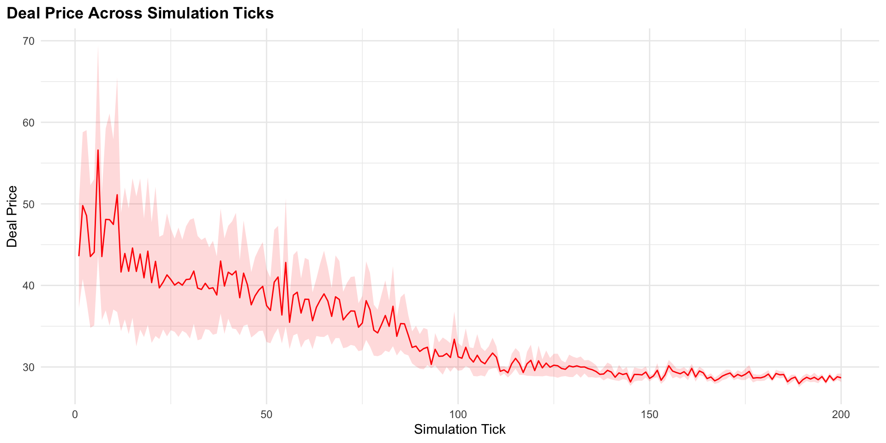

Hello, this is a simulation of a market with buyer and seller within agent-based model that utilise my own package, tidyABM
tidyABM is a ABM package in R that utilise tidy principle. It use similar grammar decision as netlogo, it has 3 main components:
It based on primer video about that exact thing that you can see here:
To start, we will use a pretty simple example, with 1 seller and 2 buyer
Each agent will have:
Setting it up is pretty straightforward, how many agent there is (n) and what variable will each agent needed to have
in this case, we will have 1 seller and 1 buyer
To set what happen at each tick, we declare what happen in a descending order, much like a story
go <- abm_go(
# First we set at the beginning that there is no transaction
abm_rules(transacted ~ FALSE, deal_price ~ NA_real_),
# Then we match the buyer and seller randomly
abm_match(pair = "opposite_group", by = .group),
# Then simulating the trade
abm_rules(
# Transaction only occur if:
transacted ~ case_when(
.group == "seller" & partner_expected_price >= expected_price ~ TRUE,
.group == "buyer" & expected_price >= partner_expected_price ~ TRUE,
TRUE ~ FALSE),
# And the deal price is the middle price of both parties expected price
deal_price ~ if_else(
(.group == "seller" & partner_expected_price >= expected_price) |
(.group == "buyer" & expected_price >= partner_expected_price),
(expected_price + partner_expected_price) / 2, NA_real_)),
# Each agent then update their expected price, given wether they
# succesfully trade or not
abm_rules(
expected_price ~ case_when(
.group == "seller" & transacted ~ expected_price + 1,
.group == "seller" & !transacted ~ pmax(expected_price - 1, limit_price),
.group == "buyer" & transacted ~ expected_price - 1,
.group == "buyer" & !transacted ~ pmin(expected_price + 1, limit_price),
TRUE ~ expected_price),
.scope = "population")
)To run the simulation, we use abm_run() function with inputting the setup (in this case market), what happen at each tick (go) and how many periods will the model run.
The results is in a tibble, which can easily analysed using dplyr.
# A tibble: 5 × 7
tick .id .group limit_price expected_price transacted deal_price
<int> <int> <chr> <dbl> <dbl> <lgl> <dbl>
1 0 1 seller 20 30 FALSE NA
2 0 2 buyer 55 40 FALSE NA
3 0 3 buyer 60 45 FALSE NA
4 1 1 seller 20 31 TRUE 35
5 1 2 buyer 55 39 TRUE 35# A tibble: 5 × 7
tick .id .group limit_price expected_price transacted deal_price
<int> <int> <chr> <dbl> <dbl> <lgl> <dbl>
1 199 2 buyer 55 55 FALSE NA
2 199 3 buyer 60 60 FALSE NA
3 200 1 seller 20 56 TRUE 57.5
4 200 2 buyer 55 55 FALSE NA
5 200 3 buyer 60 59 TRUE 57.5As you can see, the column match with what we describe at the setup
We can analyse the data with ggplot. For example, we want to see how will the agreed price evolve overtime.
With only 1 seller and 2 buyer, the buyer expected price will always increase, as there will always be 1 buyer that doesnt transact (which in turn raised its expected price).
# A tibble: 2 × 2
transacted n
<lgl> <int>
1 FALSE 289
2 TRUE 113Thus, price increase.
result |>
filter(.group == "buyer") |>
ggplot(aes(x = tick, y = deal_price)) +
geom_smooth(method = "loess", se = FALSE, color = "red", size = 0.5) +
geom_point(shape = 21, fill = NA, color = "black", alpha = 0.5, stroke = 0.8, size = 1.5) +
labs(
title = "Deal Price Across Simulation Ticks",
x = "Simulation Tick",
y = "Deal Price",) +
theme_minimal() +
theme(plot.title.position = "plot",
plot.title = element_text(face = "bold", size = 13))
Note
This also show when there is more demand (buyer) than supply (seller), price will increase.
lets now see what happen when there is more seller, as the package is using 2 main blocks, we can just swap the block that need to be changed.
Then we run it again.
The plotting code is similar to before, so i will not show it again.
As we would expect, while there is more seller (supply) then buyer (demand), the price will decrease.

Lets up the game now, lets use 50 buyer and 50 seller. But rather than we specify the limit_price and expected_price one by one, we will use a function to specify it
market3 <- abm_setup(
agents = list(
seller = abm_agents(
n = 50,
limit_price = ~rlnorm(n, log(30), 0.5),
expected_price = ~rlnorm(n, log(30), 0.7),
transacted = FALSE,
deal_price = NA_real_),
buyer = abm_agents(
n = 50,
limit_price = ~rlnorm(n, log(30), 0.5),
expected_price = ~rlnorm(n, log(30), 0.7),
transacted = FALSE,
deal_price = NA_real_)))Then we run it again.
We will only show the mean deal_price and the standard error to show variability.
As we can see, there are huge variation in the early tick, but overtime, it almost merge to a single price. This is the price mechanism.

simulating market with ABM